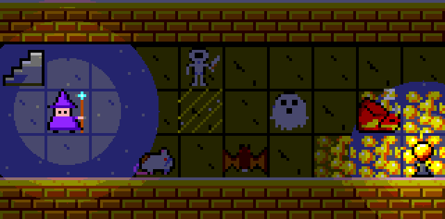

A new dungeon every run
Twelve levels in four regions: the Crypt, the Glowcaves, the Drowned Temple and the Clockwork Keep. Each has its own monsters, music and boss.
Go down. Grab the Sunstone. Get back!
A dragon sleeps on a glowing gem, twelve levels under the tavern. Pinching it is the easy part. Then you climb back up, through every level you came down, with a very cross dragon behind you.

Features
Twelve levels in four regions: the Crypt, the Glowcaves, the Drowned Temple and the Clockwork Keep. Each has its own monsters, music and boss.
Every level stays as you left it. On the way back up, the dungeon has changed its mind about you.
One twenty-sided die decides everything, and the screen says what you need. Look at a monster to see how many hits it takes, both ways.
Some monsters are wary, some are friendly. Folk like a chat. Feed a hungry animal, make a friend, bring a pet.
No experience points. Fight, cast and dodge well, and your scores may rise when you take the stairs.
Potions and scrolls are unknown until you try them. Spells come from scrolls, and wands run out.
Every run draws its own handful of surprises. The tavern tells you three rumours about them. One is a fib.
Easy mode gives you three lives. A short run is six levels. Relay mode lets two players take turns.
Type a dungeon number and you both get the same dungeon. Compare scores in the hall of fame.
With an SD card, the game keeps your hall of fame and your fallen heroes. You may find their traces in later runs.
Wizard, witch, warrior, rogue, cleric, ranger, bard, druid, and two more to earn. Pick a look and a robe colour too.
Every region has its own tune on the Next's sound chips. It gets tense when something wakes, and goes quiet when you tiptoe.
Screens
Click a picture to see it bigger. Only the first few levels: the rest is for you to find.
How to play
| Q A O P | Move up, down, left, right. Or 5–8, or a joystick. Press two at once to go diagonally. |
| SPACE | Wait a turn and search, or take the stairs |
| I | Your pack: Q/A to pick, SPACE to use, T to throw |
| Z | Your spell book |
| X | Your class's special, once a level |
| K | Pray, once a level |
| L | Look at what you can see |
| M | The map |
| H | Help, any time. It takes no turns. |
| 0 / ENTER | Back out of things |
Go down to the dragon and take the Sunstone. Then get back out of the top stairs with it, and you've won.
Walk into a monster to fight it, into a friend to swap places, and into folk to chat. Walk into shrines, wells and fountains to see what they do. Most things do something. Some bite.
Type a name, then pick a class, a look, a race and a robe colour. Then choose how hard: easy mode gives you three lives, normal gives you one, and relay is for two players taking turns. The dials make it easier or harder: monsters, traps, torches, and how deep it goes.
Tips
down-and-back-again.nex to your SD card. Pick it in the Browser and press ENTER..nex file in CSpect. Give it an SD card folder if you want your scores kept.dabagain.sav beside it: the hall of fame, unlocks and past heroes. Keep it when you download a new version.Changelog
lastrun.txt: the story of your last run.Coming next